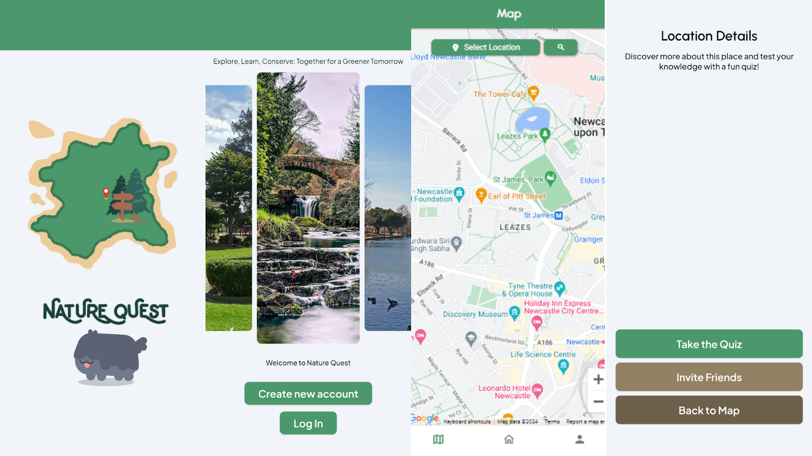

Nature Quest App
A team-built educational app designed to encourage environmental exploration through map-based discovery, quizzes, badges, and community interaction.

Overview
Nature Quest was designed as an educational application aligned with the United Nations Sustainable Development Goal 15: Life on Land. The concept centers on helping users learn about environmentally important locations, track visits, complete quizzes, earn badges and stars, and engage with others through map-based exploration and social features.
My Role
In the group project, I effectively took on the role of Team Leader. I organized the team’s workflow, created the shared collaboration structure, maintained documentation and timesheets, and worked across planning, database support, feature descriptions, and project management. I also created the GitHub repository for the application and worked heavily on the Technical Design Document, including editing, updating, and publishing the final version.
Core App Structure
The application was structured around four main sections: Map, Profile, Feed, and Settings. The map acts as the central hub, showing the user’s current GPS-driven blue marker alongside pins for locations of interest. The profile area tracks badges and progress, the feed supports posts and image sharing, and the broader app flow includes onboarding, login, notifications, quizzes, and reward systems.
Key Features
- Map-Based Exploration: Users can view environmental locations on a map with GPS-updated current position and static markers for places of interest.
- Quizzes & Learning: Visiting locations can unlock quizzes tied to those places, helping turn exploration into structured educational interaction.
- Badges & Stars: Users earn badges for visiting locations, with badge progression supported by stars earned through quizzes, posting, and sharing.
- Feed & Social Features: Users can upload images, create posts tied to locations, and share achievements externally.
- Notifications: The app is designed to notify users when they reach relevant areas, encouraging discovery of nearby environmental points.
- Onboarding & Login Flow: The app includes splash, onboarding, registration, and login states to support first-time and returning users.
Technical Focus
The project emphasized software structure, usability, and data-backed progression rather than game mechanics in the traditional sense. The TDD specifies a NoSQL database for storing user information, badges, posts, and locations, allowing more flexible object structures for location data and related content. The frontend work was designed in FlutterFlow, while the overall system included backend/API and database planning as part of the wider team effort.
A large part of my contribution was organizational and structural: I helped shape the database planning in a broad sense, assisted with the engineering and design of the app’s functions, and took a major role in documenting how the application was intended to work.
Design Goals
Nature Quest aimed to combine educational content with stronger user engagement than purely functional civic or environmental apps. The team’s research explicitly looked at examples like Love Clean Streets, Falling Fruit, and Duolingo, drawing on map interaction, community features, and gamified motivation to create something more engaging than a simple information tool.
Testing & User Flow
The TDD lays out a clear end-to-end user journey: opening splash screens, registering or logging in, navigating between map, feed, and profile, selecting map markers, taking quizzes, posting content, inviting friends, and logging out. The testing plan focused on verifying both isolated features and the full user path through the application.
Outcome
Nature Quest is one of the strongest examples in my portfolio of collaborative planning, team leadership, and applied software design outside of pure game development. Even though it is more of a teaching and engagement tool than a game, it still reflects many of the design principles I care about most: clear structure, progression systems, user-facing feedback, and building software around how people actually navigate and use it.
App Screens & User Flow

These screens show the project’s visual direction and user flow, including onboarding, map exploration, and location-detail interaction. They reflect the app’s emphasis on approachable navigation, environmental discovery, and clear progression through educational content.